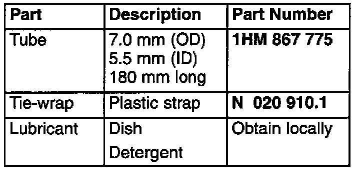

Rear Doors - Eliminating Air Leaks
Group: 58Number: 97-01
Date: Feb. 19, 1997
Subject:
Rear Doors, Eliminating Air Leaks
Model(s):
Golf, GTI, Jetta 1997 -->
Condition
Air leaks at upper front corners of rear doors may be caused by kinks occurring in rubber tube of door seal at radius -a-.
Service

If condition exists obtain the following materials:
CAUTION!
Part numbers are for reference only. Always check with your Parts Dept. for the latest parts information.

- Locate hole (closest to radius -a-) in small tube of door seal -1- where radius is sharpest.
- Enlarge hole to 5.0 mm (approx. 3/16 in) using a 5.0 mm drill bit.
- Slide tube over tie-wrap to end of strap.
- Soak tie-wrap/tube in solution of dish detergent.
- Thread tie-wrap/tube through 5.O mm hole to nearest hole on other side of radius.
- Push tie-wrap/tube (almost completely) through door seal tube.
- Remove tie-wrap from tube.
- Work the rest of tube into hole by hand then smooth tube around the radius of door seal as necessary.
Note:
Tube must be evenly installed around the radius of the corner.
- Clean any remaining detergent residue from door seal as necessary.
When procedure applies to vehicles within warranty use the following:
Part Identifier: 5863
Labor Operation: 5863511 20 TU